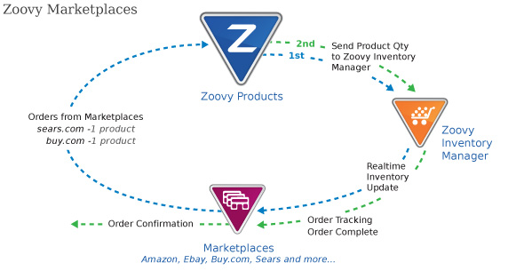

Selling on marketplaces can play a key role in a websites success by increasing exposure for more sales opportunities. Zoovy has integrated with the top marketplaces: Amazon, eBay, and Buy.com in an effort to help merchants diversify and sell more online.
Zoovy simplifies and automates the process of listing products directly from a Zoovy web store to multiple marketplaces. Our built in system lets you control which products appear where, how much they sell for, and maintain inventory in real time. Orders and tracking information is also shared between Zoovy and the marketplace automatically. Maintaining everything in one central location saves time and money.
Zoovy can provide live training for any marketplace integration assistance.
% # Do not touch anything below this line. <&| /includes/footer/index.html, menu => $menu &>